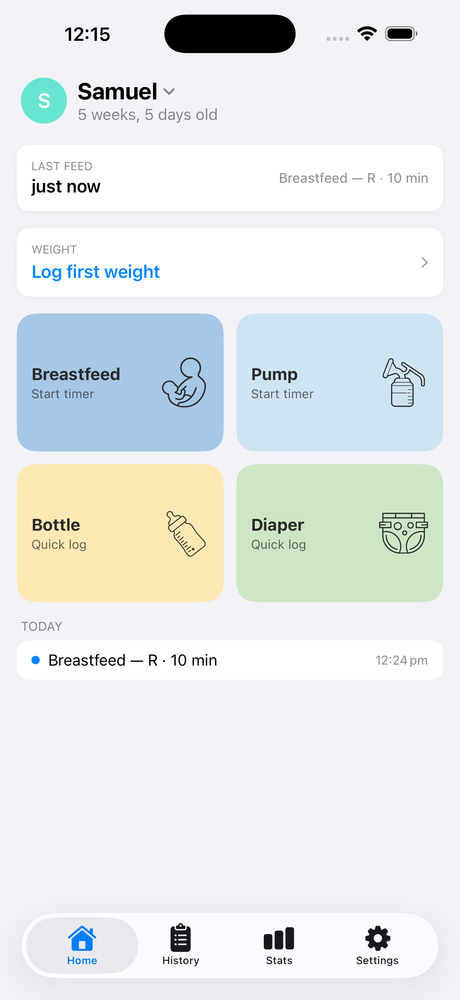
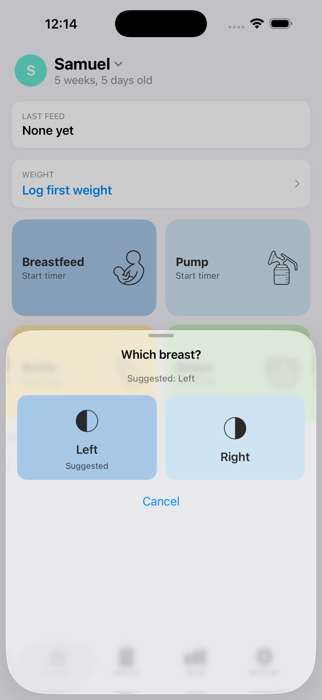
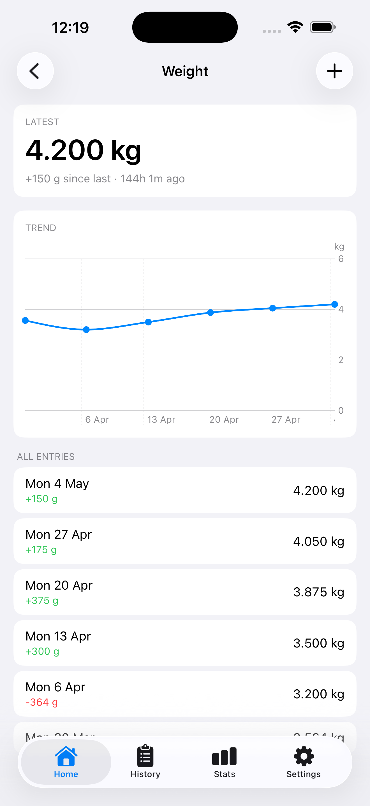

Tap once. Move on.
Designed for one-handed use while holding a baby. No menus inside menus, no required notes, no weekly setup wizards.
Babio helps you log feeds, diapers, and weight at 3 a.m. without thinking. One screen, big buttons, no accounts.



Designed for one-handed use while holding a baby. No menus inside menus, no required notes, no weekly setup wizards.
Everything syncs through your own private iCloud. No accounts, no servers, no analytics, no third-party SDKs of any kind.
Optional, gentle nudges if it's been a while since the last feed, change, or weigh-in. Off by default. Never noisy.
A single tap writes your whole diary to a JSON file you can keep, share with a paediatrician, or restore on a new phone.
Babio started as a small app built for one family, after a baby was born. Every other tracker we tried wanted an account, a subscription, or asked us to remember thirty fields per feed.
Babio is what we wished existed at 3 a.m.: a single screen, big buttons, and the quiet certainty that the data is ours alone.
— Made in Perth, Western Australia